- Overview
- Requirements
- Advanced Triggers
- PMFCloneAndRestartCase()
- PMFCrudTable()
- Function Definition
- Example 1: Inserting a record in a table
- Example 2: Updating a record in a table
- Example 3: Deleting a record in a table
- PMFGeneratePdf()
- PMFGetCaseNumber()
- PMFGetFieldsOfDynaform()
- PMFGetGroupsOfUser()
- PMFGetInputsDocumentsOfCase()
- PMFGetRolUser()
- PMFGetUserReportsTo()
- PMFGetUsersOfTask()
- PMFLoadGrid()
- PMFSetOnVacation()
 Plugin Version:
3.1.7
Plugin Version:
3.1.7
Overview
The PowerUp plugin includes 12 extra functions, which improve the generation of PDF documents, the loading of data inside a grid, the reassignment the cases of a user who is on vacation, and more. These extra functions make coding triggers easier and simpler, since they allow process designers to avoid using complicated internal classes and complex database queries.
Moreover, it offers three additional fields to Dynaforms, so that forms can display images, view documents and access the Input Document interface.
Requirements
ProcessMaker Compatibility
This plugin is fully compatible with:
- ProcessMaker 3.4.6 and later
Advanced Triggers
PMFCloneAndRestartCase()
PMFCloneAndRestartCase() makes an identical copy of a specified case, including all the data generated in the case. The copy of the case will be stored in the DRAFT folder. The status of the original case can changed to CANCELLED or PAUSED.
Note: System Variables, Input Documents, Output Documents and Case Notes won't be copied when the case is cloned. PMFCloneAndRestartCase() only clones the case variables stored in the <WORKSPACE>.APPLICATION.APP_DATA field.
Function Definition
Parameters:
- string appUid: The unique ID of the case to be cloned. To clone the current case, use the system variable @@APPLICATION.
- string statusCurrentCase: Optional parameter. Set the status of the original case, which can be "PAUSED" or "CANCELLED". If not included, set to '' (empty string) or only set to "", then the status of the original case will not change.
- string unPauseDate: Optional parameter. If the status of the original case is set to "PAUSED", then it will be unpaused on the specified date. Use the YYYY-MM-DD format, so July 1, 2015, would be "2015-07-01" If this parameter isn't included, set to '' (empty string) or only set to "", then the original case will be paused indefinitely until it is manually unpaused.
Return value:
- int. Returns the case number for the new case that was created.
If appUid is empty, PMFCloneAndRestartCase() returns false. If appUid isn't a valid case ID, then the function is caught by an exception and @@__ERROR__ will contain the message "The Application row '<CASE-UID>' doesn't exist!". To handle the exception, the function should be enclosed in a try{...} catch{...} clause.
Example
Create a trigger that clones the current case. Open a process for editing and go to the TRIGGERS tab. Click on the WIZARD button and then expand ProcessMaker Advanced Triggers, then select PMFCloneAndRestartCase (Create a new case based on the data of an already existing case) function:
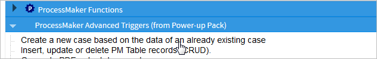Fill in the following parameters for the function:

The function definition will be:
This example uses the system variable @@APPLICATION, so the current case, which is #31, will be cloned:
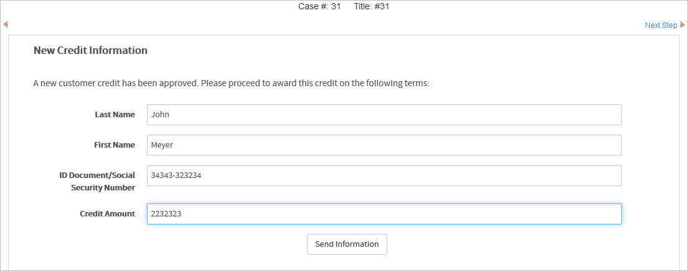When checked in the the ProcessMaker debugger, a new case, whose case number is 32, was created:
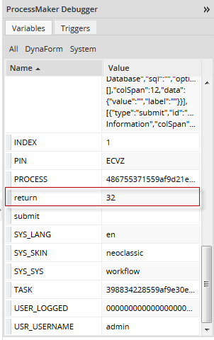Both the original and the cloned cases are now found in the Draft folder

PMFCrudTable()
PMFCrudTable() inserts, updates or deletes a single record in a MySQL table. This function can be used with any MySQL table, including PMtables and Report Tables, but it will not work with any other type of database.
Function Definition
Parameters:
- string option. Define the type of SQL operation to execute. Possible values: 'insert', 'update' or 'delete'
- string table. Name of the table where the operation will take place. Note that MySQL table names are case sensitive by default in Linux/UNIX, but not case sensitive in Windows.
- array data. Optional parameter. Leave this parameter blank for delete operations. For insert and update operations, define an array of values that will be inserted or updated:
- array('value1', 'value2', ...)
- Do not include values for fields that are auto-incremented, and make sure that the values are listed in the same order as they are defined in the table. If the value is input by the user or contains single quotation marks, use mysql_real_escape_string() to escape single quotation marks and prevent SQL injection attacks. See the example below.
- string idTable. Optional parameter. The unique identifier of the record to be affected. This must be the value found in the primary key field of the table. This value must be specified for delete and update operations. For insert operations, this value may be left blank if the primary key field is auto-incremented by the database.
- string dbConectionUid. Optional parameter. The UID of the database connection where the operation will be executed, or one of the databases for the current workspace: 'workflow', 'rbac' or 'rp'. If not included, then it will be the current workflow database by default. See executeQuery() for more information.
Return value:
- int. Returns 1 if the operation was successful, or 0 if unsuccessful. If the database is not MySQL or an exception was thrown, then returns null. To check whether an exception was thrown while executing PMFCrudTable(), see Error Management.
PMFGeneratePdf()
PMFGeneratePdf() generates a PDF document with pagination and a footer. This only works with Output Documents using the TCPDF library.
Function Definition
Parameters:
- string outputID: The unique ID of the Output Document, which can be found by opening the process for editing, going to the Output Documents and clicking on the Show ID button for an Output Document. It can also found by following these instructions.
- string footerContent The content of the footer that will be placed at the end of the document. By default it will be enclosed in double quotes, i.e.: "ProcessMaker Documentation". To edit the source code you can also use simple quotes.
- string sApplication: Optional parameter. The unique ID of the case where the Output Document will be generated. If omitted or set to NULL, then an Output Document file will be created for the current case.
- int iDelegation: Optional parameter. The delegation index of the current task in the case. If omitted or set to NULL, then it will use the current task for the current case.
- string sUserLogged: Optional parameter. The unique ID of the user who will generate the PDF. This should be set to the user who is currently designated to work on the case. If omitted or set to NULL, then the user currently logged-in will be used.
Note: If you are using the
PMFGeneratePdf()function in a Script task, thesUserLoggedparameter is required. Otherwise, if there is no user UID, it must be defined as null.
Return value:
There is no return value.
Example
This example generates an Output Document in the current case with pagination and a footer.
1. Create an Invoice document using the TCPDF engine. Add some content into the document. Then, get the Output Document's unique ID.
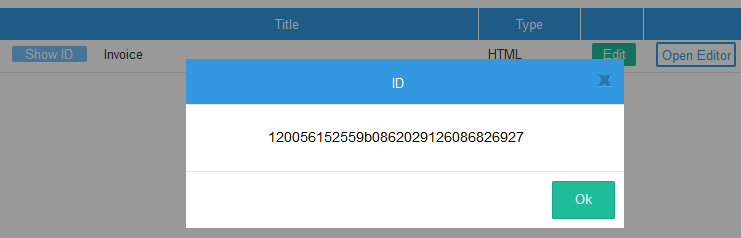2. Create the trigger. Go to TRIGGERS, then click on the WIZARD button. Expand ProcessMaker Advanced Triggers, click on the PMFGeneratePdf (Generate PDF output document) function, and fill in the following information:

The trigger's source code will be:
Then, assign the trigger to fire at some point during the process. Running the case, click on File (.pdf) Open to start downloading the PDF document.

Opening the generated PDF:
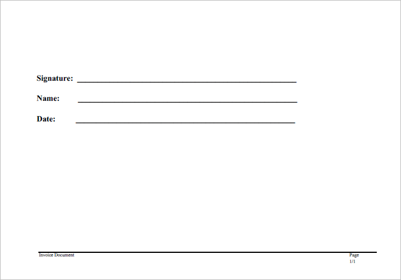PMFGetCaseNumber()
PMFGetCaseNumber() returns the case number for a specified case. The case number is an integer, which increments by 1 for each new case in a workspace, so the case number for the first case is 1, the fifth case is 5, and the 623rd case is 623.
Function Definition
Parameters:
- string appUid: The unique ID of the case. To get the case number for current case, use the system variable @@APPLICATION.
Return Value:
- int: Returns the number of the case.
Example
1. Let's create a simple process where you will obtain the case number and send it to the next person who will continue the case, which will help the next assigned user know which case number needs to be opened.
2. Now, let's create the trigger with the corresponding function. Go to the TRIGGERS tab, inside the process you are working on, and click on the WIZARD button. Select ProcessMaker Advanced Triggers and then look for the PMFGetCaseNumber (Get the application number (Case number)) function and fill it with the following information:
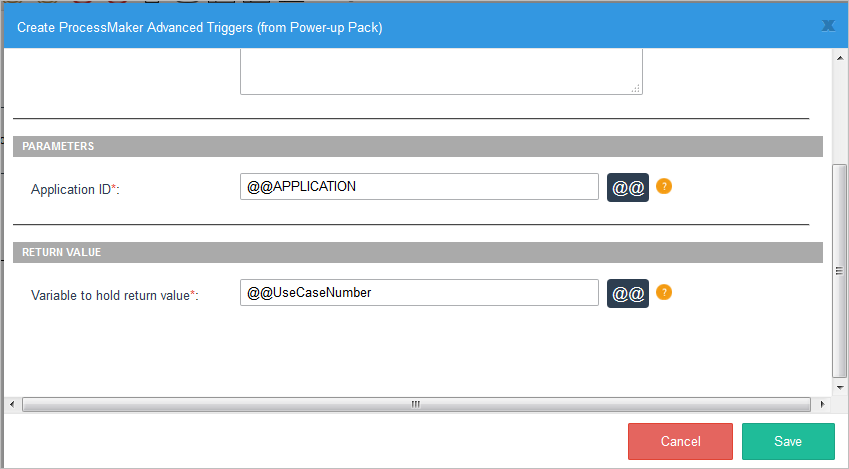Its definition will be:
3. Then create an email template named template.html which uses the @@UseCaseNumber variable:

4. Then use the PMFSendMessage() function in order to send out an email in a subsequent trigger:
Replace liliana@colosa.com by your email. Additionally, before using PMFSendMessage, you must configure your Email Server.
5. Inside the process, assign the trigger where the case number is obtained: before the Dynaform, and before the trigger to send mails after that. Executing case #48:
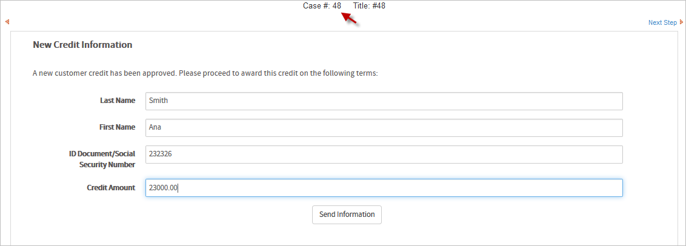The email will be:
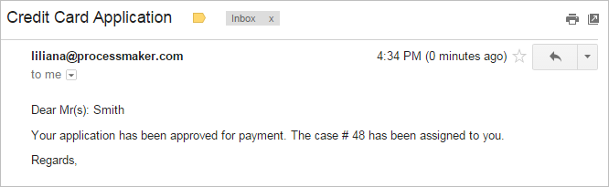PMFGetFieldsOfDynaform()
PMFGetFieldsOfDynaform() returns information about the fields in a Dynaform, such as the field name, field type, and field label.
Function Definition
Parameters:
- string proUid: The unique ID of the process. For the current process, use the @@PROCESS system variable.
- string dynUid: The unique ID of the Dynaform whose list of fields will be retrieved.
Return Value:
An array, with the following structure:
Where:
- string FIELD_NAME: The field name, which is unique and identifies the field.
- string FIELD_LABEL: The field label, which is the text displayed on the Dynaform. Note that the value for hidden, javascript, image, documentviewer and inputdocview fields will be an empty string, because these fields do not have labels.
- string FIELD_TYPE: The field type: currency. percentage, password, suggest, textarea, title, subtitle, button, submit, reset, dropdown, yesno, listbox, checkbox, checkgroup, radiogroup, date, hidden, link, file, javascript, documentviewer, inputdocview or image.
Example
This example obtains a list of all the textbox fields in a Dynaform. First, get the unique ID for the Dynaform. Open the process which contains the Dynaform and go to the DYNAFORMS tab. In the list of Dynaforms, click on the Show ID button for the Dynaform.
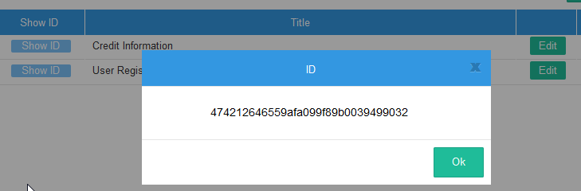Now, create the trigger. Go to the TRIGGERS tab, then click on the WIZARD button. Select ProcessMaker Advanced Triggers and then look for the PMFGetFieldsOfDynaform (Return the fields of a Dynaform) function and fill in the following information:

Its definition will be:
Then edit the trigger's source code by adding the code below the definition of PMFGetFieldsOfDynaform. This function can look through the list of returned fields and copy those fields, which are textboxes, to the @?TextboxList
This trigger can be set to fire at any point in a process, since the fields in a Dynaform will not change. If the debugger is enabled, then the contents of the @?result can be seen when running a case:
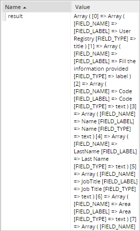
PMFGetGroupsOfUser()
PMFGetGroupsOfUser() obtains a list of groups to which a user is assigned.
Function Definition
Parameters:
- string userUid: The user's unique ID, which can be found in the following ways:
- Get the UID of the currently logged-in user with the @@USER_LOGGED system variable or $_SESSION['USER_LOGGED'].
- Use the PMFUserList() or userList() web service.
- Query the wf_<WORKSPACE>.USERS.USR_UID field in the database with executeQuery().
- string statusGroup: Optional parameter. Group status. It can be ACTIVE, INACTIVE or ALL.
Return value:
array. If $userUid is not assigned a value, this function returns false. If the user doesn't exist or the user isn't assigned to any groups, then it returns an empty array. If the user is assigned to one or more groups, then it returns the following associative array:
Example
1. Create three groups and assign a user to them. Create a grid Dynaform with two fields: IDgroup and GroupName, both of them in view mode. Add the grid inside a Dynaform with a field name of "gridGroups".
2. Now, create a trigger which uses the PMFGetGroupsOfUser() function. Go to the TRIGGERS tab, then click on the WIZARD button. Expand ProcessMaker Advanced Triggers, click on the PMFGetGroupsOfUser (Return the group(s) of a user) function and fill in the following information:
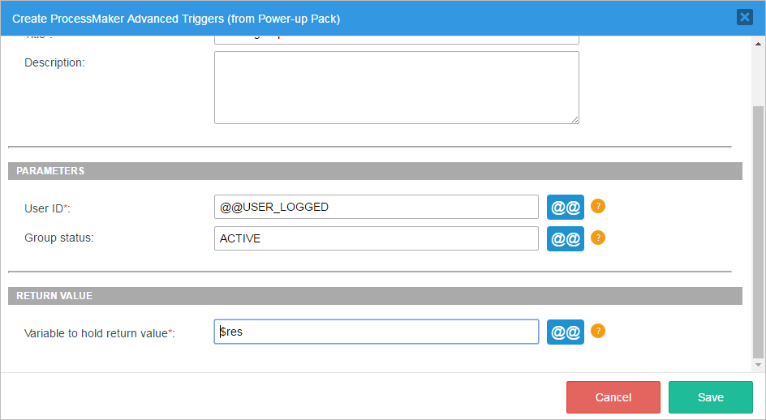Its definition will be:
The following trigger code creates an array with the same structure as a grid. The trigger will set the contents of a grid named "gridGroups". Make sure to use the same name for the case variable and the field name of the grid object embedded in a master Dynaform. In this example, the function will return all ACTIVE groups.
Don't forget to create variables in order to associate them with the respective fields. For instance the following variables must be created: gridGroups and UserLogged. Associate gridGroups to the grid created, and UserLogged with the field where the logged user will appear. To do this, add the following code below the PMFGetGroupsOfUser function:
$c = 1;
$array1 = array();
foreach ($res as $key=>$value) {
$array1[$c] = array('text0000000002' => $key, 'text0000000003' => $value);//Use the ID of each grid field
$c = $c + 1;
}
@@gridGroups = $array1;
}
@@Data = userInfo(@@USER_LOGGED);
@@UserLogged = @@Data['firstname'] . ' ' . @@Data['lastname'];
After running the case, the result will be:

Knowing a user's groups can be useful when doing value based assignment in a case.
PMFGetInputsDocumentsOfCase()
PMFGetInputsDocumentsOfCase() obtains the list of files uploaded for a case or for a particular Input Document in a case.
Function Definition
Parameters:
- string appUid: The unique ID of the case. For the current case, set to the @@APPLICATION system variable.
- string inputDocUid: Optional parameter. The unique ID of an Input Document. If not included, then all the files uploaded during the case will be returned, including both Input Document files and any files uploaded to a file field in a Dynaform.
Return value:
If no files are found, then returns an empty array. If files are found, then returns an array with the following structure:
- [0] array
- ( associative array
- string ['APP_DOC_UID']: The unique ID for the uploaded file.
- int ['DOC_VERSION']: The version number of the file. The first version is 1, the second is 2, etc.
- string ['DOC_UID']: The unique ID for the Input Document.
- string ['APP_DOC_COMMENT']: Comment entered by the user when the file was uploaded.
- string ['APP_DOC_FILENAME']: The original filename of the uploaded file.
- int ['APP_DOC_INDEX']: The index of the uploaded file. The first file for an Input Document is 1, the second is 2, etc.
- string ['TITLE']: The original filename, which is same as as ['APP_DOC_FILENAME'].
- int ['POSITION']: The number of the step when the file was uploaded. The first step in a task is 1, the second is 2, etc.
- string ['CONFIRM']: Message to confirm the deletion of the file in the current system language.
- string ['REPLACE_LABEL']: Label for the "replace" button, which is no longer used.
- string ['NEWVERSION_LABEL']: Label shown on the button to add "New Version" in the current system language.
- string ['VERSIONHISTORY_LABEL']: Label shown on the button to see the "Version History" in the current system language.
- string ['CREATOR']: The full name (first name and last name) of the user who uploaded the file.
- string ['APP_DOC_CREATE_DATE']: The datetime in the format YYYY-MM-DD HH:MM:SS when the file was uploaded. Ex: 2014-09-26 11:07:09
- string ['DOC_VERSION_LABEL']: The label shown for the version of the file, so the first version is '1', the second is '2', etc.
- string ['DOWNLOAD_LABEL']: The label for the "Download" button in the current system language.
- string ['DOWNLOAD_LINK']: The partial URL to download the file, using its APP_DOC_UID and DOC_VERSION numbers.
- Ex: 'cases_ShowDocument?a=106235827542580dfcfa708029871391&v=2'
- string ['COMMENT']: The file's comment, which is the same as ['APP_DOC_COMMENT'].
- )
- ...
An Input Document is identified by its DOC_UID and can have multiple files uploaded to it. Each new file uploaded to an Input Document has a different APP_DOC_UID. If a file has a new version, it will have the same APP_DOC_UID, but its APP_DOC_INDEX will be incremented by 1. In addition, all files, regardless of whether they are new files or another version of an existing file, are numbered in the order in which they were uploaded in the APP_DOC_INDEX.
For example, a user uploads two files to an Input Document with the DOC_UID '747284426542478ef3e1a97070179701'. The first file is "Expense Report Part1.doc" and the second file is "Expense Report Part2.doc". Then the user revises the first file and uploads a new version with the filename "Expense Report Part1-revised.doc". These 3 files would be listed as:
- First file: "Expense Report Part1.doc"
- Second file: "Expense Report Part2.doc"
- New version of first file: "Expense Report Part1-revised.doc"
Example
This example obtains files uploaded during the execution of a case.
1. Create an input document and assign it to a task. Then, create a trigger. Go to TRIGGERS, then click on the WIZARD button. Expand ProcessMaker Advanced Triggers, click on the PMFGetInputsDocumentsOfCase (Get the list of input documents that belong to a case) function and fill in the following information:

Its definition will be:
When the above trigger is executed, the list of Input Document files will be placed in an array in the @@return variable.
2. Set the trigger to fire after an Input Document. Enable ProcessMaker debugger in order to see the value of the @@return, while executing a case. In this example, two files are uploaded to the Input Document:
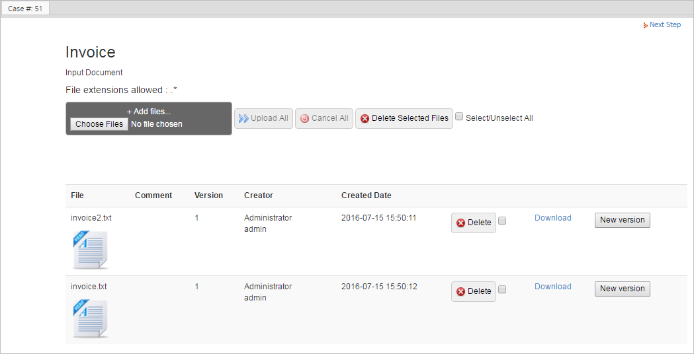Click on next step, and look for the return variable in the debugger, which shows that two files were uploaded:
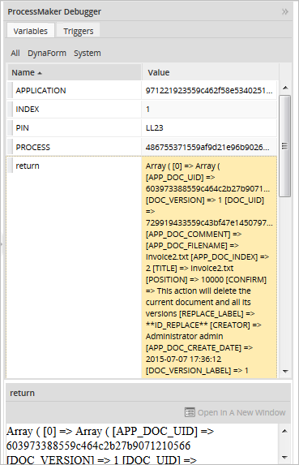Create a download link
If the second parameter of the PMFGetInputsDocumentsOfCase() function isn't specified, then the function returns all the files uploaded to the case. To only get the files uploaded to a specific Input Document, set the second parameter to the Input Document UID. To get that ID, open a process for editing and go to the Input Documents tab. In the list of Input Documents, click on the Show ID button for a specific Input Document:
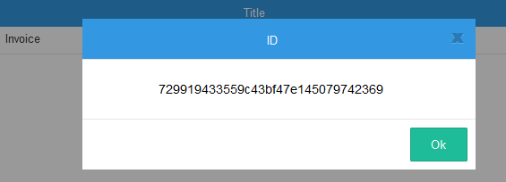Then use that ID in the second parameter of the PMFGetInputsDocumentsOfCase() function.
In order to construct the complete URL to download a file, prepend "http://<IP-ADDRESS>/sys<WORKSPACE>/<LANG>/<SKIN>/case" to the DOWNLOAD_LINK. For example, if the DOWNLOAD_LINK is "cases_ShowDocument?a=106235827542580dfcfa708029871391&v=2", then prepend "http://www.myserver.com/sysworkflow/en/neoclassic/cases/" to create the complete URL.
In this example, the trigger searches for the last file uploaded to the Input Document with the ID '729919433559c43bf47e145079742369'. It cycles through all the files and looks for the one with the largest APP_DOC_INDEX. Then, it creates a complete URL to download that file, which is stored in the variable @@FileLink.
Do not forget to replace www.myserver.com with your ip or server addres, and replace sysworkflow with your workspace name.
//search for last uploaded file:
@@FileLink = '';
$lastIndex = 0;
foreach ($aFiles as $aFile) {
if ($lastIndex < $aFile['APP_DOC_INDEX']) {
$lastIndex = $aFile['APP_DOC_INDEX'];
@@FileLink = 'http://www.myserver.com/sysworkflow/en/neoclassic/cases/' . $aFile['DOWNLOAD_LINK'];
}
}
The result will be:
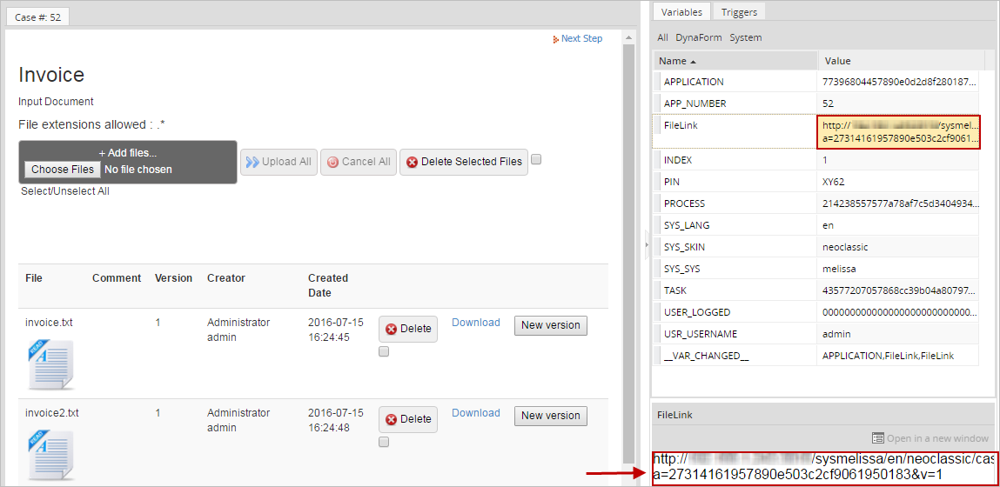If a subsequent Dynaform has a link field named "FileLink", then it will use the URL set in the above trigger:
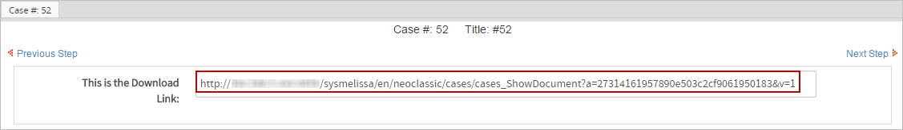PMFGetRolUser()
PMFGetRolUser() obtains the role of a specified user.
Function Definition
Parameters:
- string userUid: The user's unique ID, which can be found in the following ways:
- Get the UID of the user currently logged-in with the @@USER_LOGGED system variable or $_SESSION['USER_LOGGED'].
- Use the PMFUserList() or userList() web service.
- Query the wf_<WORKSPACE>.USERS.USR_UID field in the database with executeQuery().
Return value:
string. It returns the name of the role.
Example
This example obtains the role a user belongs to. Create a Dynaform with a text field named "Usr_Role". Then, create the trigger with the corresponding function, so go to the TRIGGERS tab, then click on the WIZARD button. Expand ProcessMaker Advanced Triggers, click on the PMFGetRolUser (Obtain the role of a user) function and fill in the following information:
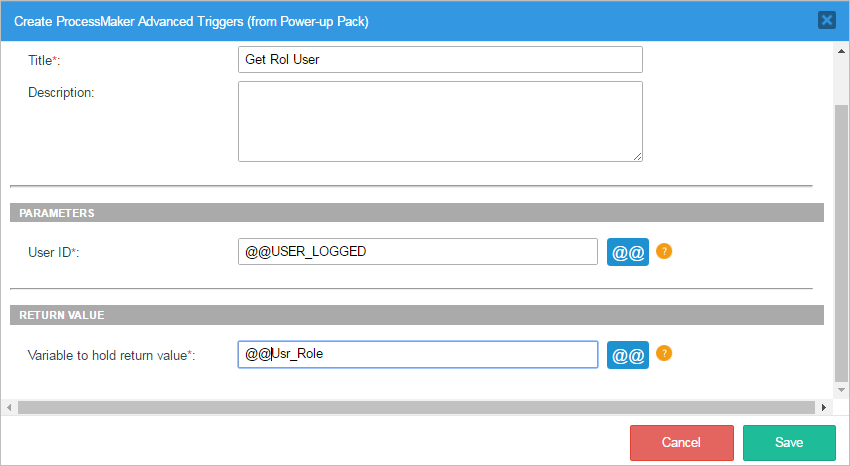Its definition will be:
Assign the trigger to fire before the Dynaform. When a case is executed, the user's role can be obtained:
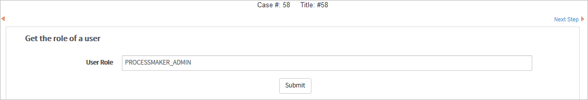This information may be used as a part of the user information displayed in a Dynaform. It can also be used in a condition to determine which tasks or steps are executed in the process.
PMFGetUserReportsTo()
PMFGetUserReportsTo() returns the unique ID of the supervisor of a specified user.
Function Definition
Parameters:
- string userUid: The user's unique ID, which can be found in the following ways:
- Get the UID of the user currently logged-in with the @@USER_LOGGED system variable or $_SESSION['USER_LOGGED'].
- Use the PMFUserList() or userList() web service.
- Query the wf_<WORKSPACE>.USERS.USR_UID field in the database with executeQuery().
Return value:
string. It returns the unique ID of the supervisor.
Example
This example uses the sample "Expense Report" process, to obtain the ID of the supervisor of the user who is executing the current case. That ID is used to send an email to the supervisor, to get the Cash Advance Approved.
First create two users and assign them to a department and make one of them a Supervisor:
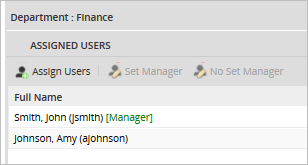Then, inside the dynaform (in this case, the corresponding dynaform of the Expense report will be Cash Travel Advanced), create a hidden variable named IdSupervisor, there we will save the Supervisor ID that will be used in the trigger. In the following example, we will obtain the role the user belongs to, so, just create a Dynaform with a field name Usr_Role.
Then, create the trigger with the corresponding function, go to TRIGGERS inside the process you are working on, then click on the WIZARD button. Select ProcessMaker Advanced Triggers, look for the PMFGetUserReportsTo (Returns the user's supervisor) function and fill it with the following information:
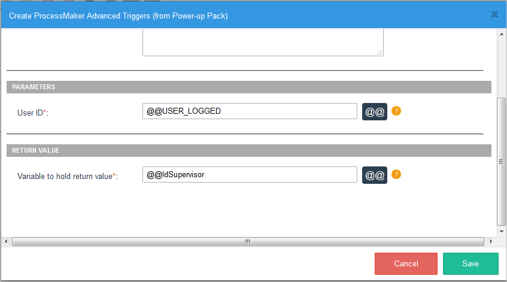The function definition is saved to the variable @@IdSupervisor (the supervisor's ID):
Below the PMFGetUserReportsTo() definition, the @@IdSupervisor variable is then used in the PMFInformationUser() function to look up the email address of the supervisor and send him/her an email. Also use the PMFSendMessage() function to send the email with the @@mail variable where you will get the supervisor's email:
Do not forget to configure your email server and replace 'liliana@colosa.com' by your personal email. Additionally, edit the template.html file in order to add information to send to the supervisor.
Assign this trigger to fire before the Dynaform. After starting the case, the following Dynaform will be used in order to send information for the corresponding approval:
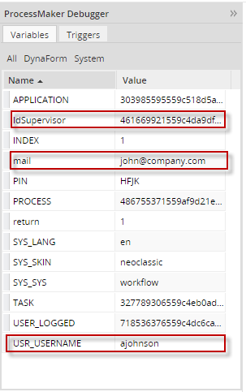This will help us to know if the values are being used properly. For instance, the value can be used to send information to that supervisor.
PMFGetUsersOfTask()
PMFGetUsersOfTask() obtains a list of users assigned to a task, no matter what type of assignment rule the task has. This function also includes users assigned to the task as members of groups.
Function Definition
Parameters:
- string taskUid. The unique ID of the task, which can be found in the following ways:
- Use the @@TASK system variable for the unique ID of the current task.
- Use the PMFTaskList() function or taskList() web service.
- Query the wf_<WORKSPACE>.TASK.TAS_UID field in the database or get the starting task of the current process with the following query:
- "SELECT TAS_UID FROM TASK WHERE PRO_UID='" . @@PROCESS . "' AND TAS_START='TRUE'"
- string statusGroup. Optional parameter. Obtains groups with the specified status, which can be: 'ACTIVE', 'INACTIVE' or 'ALL'
- string statusUser. Optional parameter. Obtains users with the specified status, which can be: 'ACTIVE', 'INACTIVE' or 'ALL'
Return value:
The list of users is returned in an array of associative arrays:
Example
Let's display users who are assigned in a task.

First, create the trigger with the corresponding function. Go to TRIGGERS inside the process you are working on, then click on the WIZARD button. Expand ProcessMaker Advanced Triggers, look for the PMFGetUsersOfTask (Get a list of users assigned to a task) function and fill it with the following information:
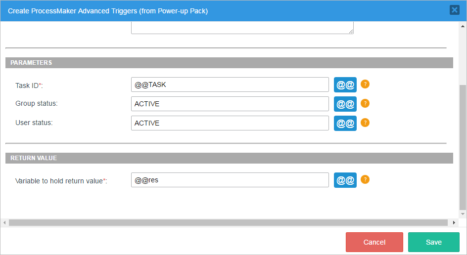Its definition will be:
In the case of the example, the task ID will be defined inside the trigger, in our case it is @@TASK, the current task. We will get the information in the @@res variable. For this example, we use Active Groups and Users. In order to get the result you need to enable your debug mode.
Assign the trigger at any place in the process, depending on how [the process/the trigger] was designed; the important thing here is the result obtained. For example, there are three users assigned in the task, so when the process and trigger are executed, the following information will be obtained:
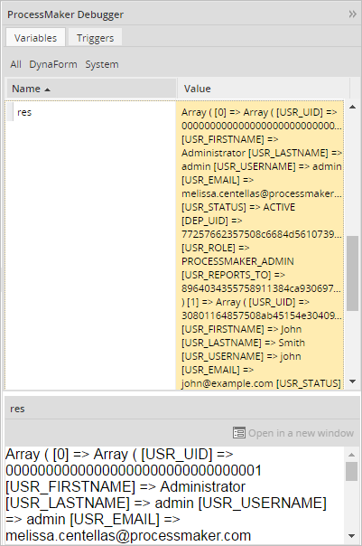As it can be seen, the information of all users assigned to a task is displayed. This information can help to decide which user will get the next task when using value based assignment.
PMFLoadGrid()
PMFLoadGrid() populates a grid with data stored in a PM Table or other MySQL table in the wf_<WORKSPACE> database for the current ProcessMaker workspace.
Function Definition
There are two ways to call the PMFLoadGrid() function. The grid can be populated by either defining the gridFields parameter or by defining the gridName, proUid and dynUid parameters. If gridFields is an associative array of field names, then the first method will be used and the gridName, proUid and dynUid will be ignored.
Parameters:
- string sourceData: The name of the table to query or an SQL SELECT statement. Remember that PM Table names are in uppercase by default and PM Tables have 'PMT_' prepended, so a PM Table named "CLIENTS_INFO" will be 'PMT_CLIENTS_INFO'.
- array gridFields: Optional parameter. An associative array that maps the grid fields to their corresponding table fields. The keys in the array contain the names of the fields in a grid and their values are the corresponding names of the fields in the database table:
- array("grid-field1"=>"table-field1", "grid-field2"=>"table-field2", ...)
- Note that it is necessary to list all the fields to be retrieved, even if the field names in the grid are the same as the field names in the database table. If the gridName, proUid and dynUid parameters will be defined, then set this parameter to array(), which is an empty array.
- string gridName: Optional parameter. The field name of the grid in a master Dynaform. Do NOT use the name of the separate grid form.
- string proUid: Optional parameter. The unique ID of the process. To get the unique ID of the current process, use the @@PROCESS system variable.
- string dynUid: Optional parameter. The unique ID of the master Dynaform that contains the grid. To get this ID, open the process for editing, click on DYNAFORMS in the top bar and in the list click on the UID button for the Dynaform.
- string sortField: Optional parameter. The name of the field by which the grid will be sorted. If omitted or set to '' (empty string), then the rows will be left in the order retrieved from the database.
- string ord: Optional parameter. The order by which the grid will be sorted, which is 'ASC' (ascending order) by default. It can be either 'ASC' or 'DESC'.
Return value:
array. It returns data as a numbered array of associative arrays, where the keys in the associative arrays are the names of the fields in the grid. This is the same way that grids are represented in ProcessMaker:
Note that the array starts counting from 1, not 0 like a normal array. If the return value PMFLoadGrid() is assigned to a case variable that has the same name as the field name of a grid in a master Dynaform, then the grid will display the data returned by PMFLoadGrid().
PMFSetOnVacation()
PMFSetOnVacation() sets a user's status to VACATION and reassigns that user's cases to another user. Note that the user will not be able to run any more cases, until his/her status is set back to ACTIVE.
Note that only cases which have "TO_DO" status are reassigned. Cases with "DRAFT" status are not reassigned.
Function Definition
Parameters:
- string userUid. The unique ID of the user whose status will be changed to VACATION. The ID can be found in the following ways:
- Get the UID of the currently logged-in user with the @@USER_LOGGED system variable or $_SESSION['USER_LOGGED'].
- Use the PMFUserList() or userList() web service.
- Query the wf_<WORKSPACE>.USERS.USR_UID field in the database with executeQuery().
- string userReplacer . Optional parameter. The unique ID of the user who will replace the user who is on vacation and be reassigned to their cases. Make sure that this replacement user either has normal or ad hoc assignment to the tasks, so they are available to be reassigned. If this parameter is not defined, then the user selected in the Replace by field of the user's profile will be reassigned to the cases.
Note: The replaceBy parameter does not change the replaceby parameter value in the user profile. This parameter only applies to cases where the function is called.
Return value:
If the user to set on vacation or the replacement user do not currently have ACTIVE status, then returns a string with an error message. Otherwise, returns the following associative array:
Example
In the example below, we will create a Dynaform where you will be able to decide which person will replace the user on vacation.
Step 1: Let's create a Dynaform with two dropdown fields.
Then create two variables, UserId, ReplacedBy, for each respective field and add the following SQL statement:
Both variables must have the same SQL statement:

Then, each variable must be related to its corresponding Dynaform field.
Step 2: Create the trigger with the corresponding function, go to TRIGGERS inside the process you are working on, then click on the WIZARD button. Expand ProcessMaker Advanced Triggers, look for the PMFSetOnVacation (Change a user to ' on vacation' status) function and fill it with the following information:

As you can see we are using Dynaform variables in both parameters.
Its definition will be:
Step 3: Make sure you have pending cases for the users you are going to use. We will use two users, Amy Johnson and Mark Peterson. Logging in with Mark Peterson and going to his inbox, we will see 4 cases:

Then, execute a case. In the first field choose Mark Peterson, since he will be the person on vacation and will be replaced by Amy Johnson. This last user must be chosen on the second field:
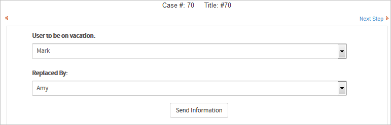Click on the Submit button, and if you have the debugger enabled, inside the return variable you will see the number of reassigned cases and their corresponding information:
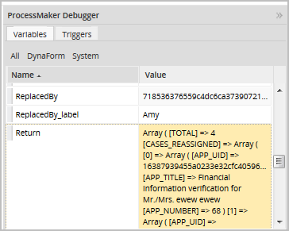Logging in with the user 'Mark Peterson', we will see that the inbox folder is empty:

Finally, logging in as 'Amy Johnson', we will see all reassigned cases in her inbox folder: